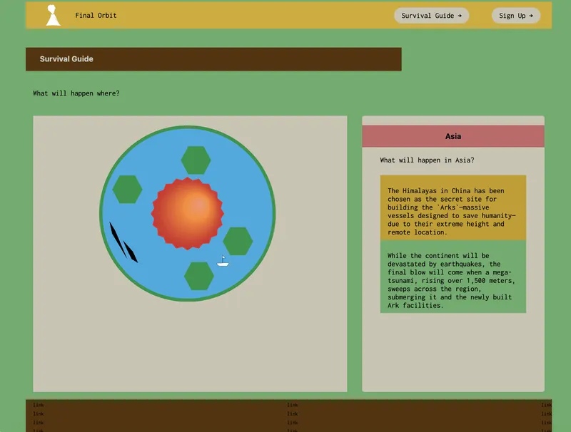
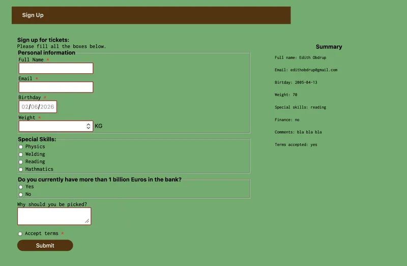

tema 4 - grundlæggende brugergrænsefladeudvikling
Tema 4 havde fokus på kodning, interaktivitet og introduktion til JavaScript. Gennem temaet arbejdede vi med et website, hvor vi udviklede én side ad gangen. Hver side introducerede nye funktioner og teknikker, hvilket gjorde det muligt gradvist at opbygge både forståelse og erfaring med de forskellige værktøjer. Dette tema var vores første møde med JavaScript, som primært bruges til at gøre hjemmesider dynamiske og interaktive. Vi arbejdede blandt andet med grafik skabt i Adobe Illustrator, som efterfølgende blev implementeret på hjemmesiden og gjort interaktiv ved hjælp af JavaScript.

Forms og dark mode
Det, jeg personligt fandt mest interessant, var netop muligheden for at skabe interaktive elementer. Det var spændende at se, hvordan kode kunne få grafiske elementer til at reagere på brugerens handlinger og dermed skabe en mere engagerende oplevelse. Derudover lærte vi også at udvikle formularer til hjemmesider. Formularer er en central del af mange websites, da de giver brugerne mulighed for at kommunikere, indsende oplysninger eller udføre handlinger på en enkel og effektiv måde. Vi arbejdede også med implementering af dark mode, som giver brugeren mulighed for at skifte mellem et lyst og et mørkt design. Desværre var jeg ikke til stede under denne del af undervisningen og har derfor endnu ikke fået arbejdet så meget med teknikken. Det er dog et område, jeg ser frem til at lære mere om, da det er en funktion, der bruges på mange moderne websites. Temaet havde generelt et stort fokus på programmering og problemløsning. Selvom det til tider kunne være frustrerende, når koden ikke fungerede som forventet, oplevede jeg også, hvor tilfredsstillende det var at finde fejlene og få løsningerne til at virke. Netop denne proces gjorde temaet både udfordrende og motiverende for mig, og jeg fik en større forståelse for, hvor meget man kan skabe gennem kode.

